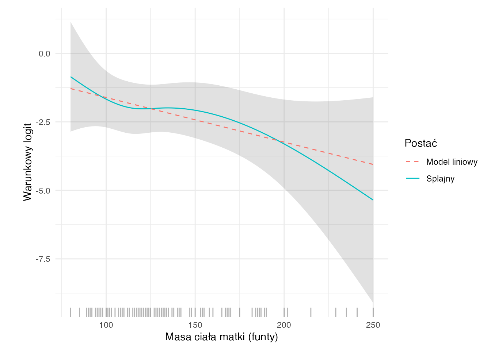
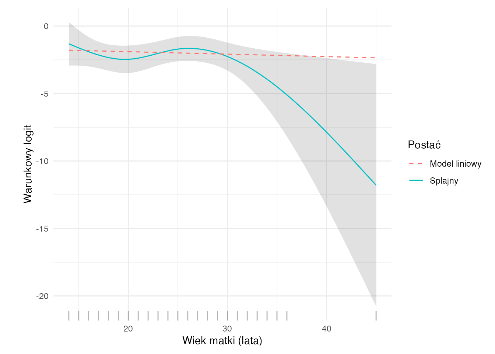

W tym rozdziale pokażemy kompletny przykład problemu badawczego, w którym zmienną objaśnianą jest zmienna binarna (przyjmuje wartość 0 lub 1). Do modelowania wykorzystamy regresję logistyczną, czyli najczęściej stosowany model klasyfikacyjny w badaniach biomedycznych i społecznych.
Skorzystamy ze zbioru birthwt z pakietu MASS, zawierającego dane o 189 porodach w szpitalu Baystate Medical Center w Springfield (Massachusetts). Zbiór ten jest klasycznym przykładem danych używanych do analizy czynników ryzyka niskiej masy urodzeniowej.
AdnotacjaCo będzie wynikiem tej analizy?
Na końcu będziemy umieli odpowiedzieć na pytanie, które cechy wiążą się z niską masą urodzeniową w tej próbie, jak duże i jak niepewne są oszacowane związki oraz jak interpretować wyniki modelu regresji logistycznej.
Formułowanie celu i problemów badawczych
Cel badawczy
Chcemy zbadać związki cech matki i przebiegu ciąży z prawdopodobieństwem niskiej masy urodzeniowej noworodka (poniżej 2500 g).
W zbiorze birthwt zmienna low oznacza, czy masa urodzeniowa noworodka jest niska (1 — tak, 0 — nie). Jest to zmienna binarna i stanowi naturalny cel dla regresji logistycznej.
WażneJasne określenie celu
Cel badawczy: opis warunkowych związków cech z niską masą urodzeniową i ocena ich niepewności za pomocą ilorazów szans.
Zmienna objaśniana i zmienne objaśniające
Zmienna objaśniana (zależna):low — wskaźnik niskiej masy urodzeniowej (1 = poniżej 2500 g, 0 = co najmniej 2500 g)
Potencjalne zmienne objaśniające (predyktory):
lwt — masa ciała matki przy ostatniej miesiączce (w funtach),
smoke — palenie w trakcie ciąży (1 = tak, 0 = nie),
ht — nadciśnienie tętnicze w wywiadzie (1 = tak, 0 = nie),
Które spośród wybranych cech wiążą się z prawdopodobieństwem niskiej masy urodzeniowej?
Jak silny jest wpływ poszczególnych czynników wyrażony ilorazami szans?
Czy przyjęty model jest dobrze dopasowany do danych?
Jak interpretować wyniki modelu w języku problemu badawczego?
Jednostka obserwacji
Pojedynczą obserwacją jest tutaj jeden poród. Każdy wiersz tabeli danych opisuje jedną matkę i jedno dziecko.
Metodyka
Kiedy stosujemy regresję logistyczną?
Regresja logistyczna jest stosowana, gdy zmienna objaśniana jest binarna (dwustanowa), czyli przyjmuje jedną z dwóch wartości — w naszym przypadku: „niska masa urodzeniowa” albo „prawidłowa masa urodzeniowa”.
Regresja liniowa nie jest w takiej sytuacji odpowiednia, ponieważ mogłaby dawać przewidywania spoza zakresu \([0, 1]\), a tymczasem modelujemy prawdopodobieństwo wystąpienia zdarzenia.
Idea modelu
W regresji logistycznej modelujemy prawdopodobieństwo \(p_i = \P(Y_i = 1 \mid X_i)\) za pomocą funkcji logistycznej:
Funkcja logistyczna jest funkcją rosnącą, która przekształca dowolną wartość rzeczywistą \(\eta \in (-\infty, +\infty)\) na prawdopodobieństwo \(p \in (0, 1)\).
Wyrażenie \(\frac{p_i}{1 - p_i}\) nazywamy szansą (ang. odds). Jest to stosunek prawdopodobieństwa sukcesu do prawdopodobieństwa porażki. Logarytm szansy — logit — jest liniową funkcją predyktorów.
Interpretacja współczynników — ilorazy szans
To najważniejsza część zrozumienia regresji logistycznej. Współczynnik \(\beta_j\) mówi nam, o ile zmienia się logarytm szansy przy wzroście predyktora \(X_j\) o 1 jednostkę, przy pozostałych predyktorach utrzymanych na stałym poziomie.
W praktyce interpretujemy iloraz szans (ang. odds ratio, OR):
Szansa dotyczy jednego profilu: przy \(p=0.2\) wynosi \(0.2/0.8=0.25\) (1 do 4). Iloraz szans porównuje dwa profile. Dla wzrostu predyktora o \(\Delta\) jednostek OR wynosi \(\exp(\Delta\beta_j)\); dla zmiennej jakościowej porównujemy kategorię z referencyjną. Te proste interpretacje zakładają brak interakcji z danym predyktorem.
\(\text{OR} = 1\): brak związku predyktora ze zdarzeniem.
\(\text{OR} > 1\): wzrost predyktora zwiększa szanse wystąpienia zdarzenia.
\(\text{OR} < 1\): wzrost predyktora zmniejsza szanse wystąpienia zdarzenia.
Na przykład, jeżeli \(\text{OR}_{\text{smoke}} = 2.5\), to szanse niskiej masy urodzeniowej u dzieci matek palących są 2.5 razy większe niż u dzieci matek niepalących, przy kontrolowaniu pozostałych zmiennych.
Założenia regresji logistycznej
Regresja logistyczna ma inne założenia niż klasyczna regresja liniowa. W tym modelu wymagamy:
Zmienna objaśniana jest binarna: \(Y_i \in \{0, 1\}\).
Niezależność obserwacji: wyniki poszczególnych obserwacji nie zależą od siebie.
Liniowość logitu: związek między predyktorami ciągłymi a logitem prawdopodobieństwa jest liniowy.
Brak silnej współliniowości: predyktory nie przenoszą prawie tej samej informacji.
Dostateczna informacja do estymacji: małe liczebności kombinacji predyktorów oraz pełna lub quasi-pełna separacja mogą uniemożliwić skończoną, stabilną estymację MNW. Liczba zdarzeń na parametr to wskazówka, nie kryterium spełnienia założeń.
AdnotacjaCzego NIE zakładamy
Regresja logistyczna nie wymaga normalności zmiennych, normalności reszt ani stałości wariancji. Wariancja warunkowa wynika jednak z modelu Bernoulliego: \(\Var(Y_i\mid X_i)=p_i(1-p_i)\). Regresja liniowa również nie wymaga normalności predyktorów.
Estymacja parametrów — metoda największej wiarygodności
W regresji logistycznej nie stosujemy metody najmniejszych kwadratów. Parametry estymujemy metodą największej wiarygodności (MNW, ang. MLE — maximum likelihood estimation).
Funkcja wiarygodności dla \(n\) niezależnych obserwacji ma postać:
Estymator MNW nie ma zamkniętej postaci analitycznej — wyznaczamy go iteracyjnie (najczęściej algorytmem Newtona-Raphsona, zwanym tu iteratively reweighted least squares, IRLS).
Ocena dopasowania modelu
W regresji logistycznej używamy kilku uzupełniających się miar:
Dewiancja i test ilorazu wiarygodności
Dewiancja porównuje model dopasowany z modelem nasyconym:
\[D = 2[\ell_{\mathrm{sat}}-\ell(\hat\beta)].\]
Dla indywidualnych obserwacji Bernoulliego \(\ell_{\mathrm{sat}}=0\), więc tutaj \(D=-2\ell(\hat\beta)\). Nie jest to uniwersalna tożsamość dla wszystkich GLM. Samej dewiancji rezydualnej nie interpretujemy jako prostego testu dopasowania \(\chi^2\) dla rzadkich, niepogrupowanych danych binarnych.
Test ilorazu wiarygodności (LRT) porównuje dewiancję dwóch zagnieżdżonych modeli. Statystyka testowa \(\Delta D = D_{\text{mniejszy}} - D_{\text{większy}}\) ma asymptotycznie rozkład \(\chi^2\) z liczbą stopni swobody równą różnicy liczby parametrów.
Kryterium informacyjne Akaike (AIC)
\[\text{AIC} = -2\ell(\hat\beta) + 2k = D + 2k \quad\text{(tutaj)},\]
gdzie \(k\) to liczba estymowanych parametrów. Niższe AIC oznacza lepszy kompromis między dopasowaniem a złożonością modelu.
Macierz pomyłek i miary klasyfikacyjne
Przy ustalonym progu odcięcia (najczęściej 0.5) klasyfikujemy obserwacje i liczymy:
Trafność (ang. accuracy): odsetek poprawnych klasyfikacji.
Swoistość (ang. specificity): odsetek poprawnie rozpoznanych przypadków \(Y = 0\).
Krzywa ROC i pole pod krzywą (AUC)
Krzywa ROC przedstawia czułość względem \(1-\text{swoistość}\) dla różnych progów. AUC należy do \([0,1]\) i określa prawdopodobieństwo, że losowy przypadek zdarzenia otrzyma wyższy wynik niż losowy brak zdarzenia (z połową wagi dla remisów). AUC około 0.5 oznacza losowe uporządkowanie; poniżej 0.5 możliwy jest odwrócony kierunek wyniku. Nie stosujemy automatycznych etykiet „akceptowalny” dla AUC \(>0.7\): użyteczność zależy od zadania. AUC nie ocenia kalibracji ani kosztów błędów.
dane |>count(low) |>mutate(pct =round(100* n /sum(n), 1)) |>ggplot(aes(x = low, y = n, fill = low)) +geom_col(width =0.5) +geom_text(aes(label =sprintf("%d (%s%%)", n, pct)), vjust =-0.5, size =4.5) +scale_fill_manual(values =c("steelblue", "firebrick")) +labs(x ="Masa urodzeniowa", y ="Liczba obserwacji") +theme_minimal(base_size =13) +theme(legend.position ="none")
Rozkład zmiennej low w zbiorze danych
W zbiorze jest 59 przypadków niskiej masy urodzeniowej (31.2%) i 130 przypadków prawidłowej masy (68.8%). Klasy są umiarkowanie niezbalansowane, co jest typowe dla danych medycznych.
Czynniki kategoryczne a niska masa urodzeniowa
Kod
ggbarstats(data = dane,x = low,y = smoke,title ="Palenie a niska masa urodzeniowa",xlab ="Palenie w ciąży",legend.title ="Masa urodzeniowa")
Palenie a niska masa urodzeniowa
Kod
ggbarstats(data = dane,x = low,y = ht,title ="Nadciśnienie a niska masa urodzeniowa",xlab ="Nadciśnienie w wywiadzie",legend.title ="Masa urodzeniowa")
Nadciśnienie a niska masa urodzeniowa
Kod
ggbarstats(data = dane,x = low,y = race,title ="Przynależność etniczna a niska masa urodzeniowa",xlab ="Przynależność etniczna",legend.title ="Masa urodzeniowa")
Przynależność etniczna a niska masa urodzeniowa
Zmienne ciągłe a niska masa urodzeniowa
Kod
ggbetweenstats(data = dane,x = low,y = lwt,title ="Masa ciała matki a niska masa urodzeniowa",xlab ="Masa urodzeniowa",ylab ="Masa ciała matki (funty)",violin.args =list(width =0))
Masa ciała matki a niska masa urodzeniowa
Kod
ggbetweenstats(data = dane,x = low,y = age,title ="Wiek matki a niska masa urodzeniowa",xlab ="Masa urodzeniowa",ylab ="Wiek matki (lata)",violin.args =list(width =0))
Wiek matki a niska masa urodzeniowa
Na etapie eksploracji widać, że palenie w ciąży, nadciśnienie tętnicze i drażliwość macicy wiążą się z większym odsetkiem niskiej masy urodzeniowej. Masa ciała matki wydaje się nieco niższa w grupie z niską masą urodzeniową. Wiek matki nie wykazuje wyraźnego związku dwuwymiarowego, ale może okazać się istotny po kontrolowaniu pozostałych zmiennych.
Budowa modelu
Modele kandydackie
Budujemy cztery modele o rosnącej złożoności. Każdy z nich musi być uzasadniony merytorycznie:
Model 1: tylko palenie — wyjściowy predyktor w tym przykładzie.
Model 2: palenie + masa ciała matki — dodajemy zmienną ciągłą opisującą budowę matki.
Model 3: palenie + masa ciała matki + nadciśnienie + drażliwość macicy — dodajemy czynniki kliniczne.
Model 4: jak Model 3, ale dodatkowo przynależność etniczna i wiek matki — model pełny.
Kod
# Zmienna objaśniana jako 0/1 (numerycznie) do glmdane_model <- dane |>mutate(low01 =as.integer(low =="niska"))model_1 <-glm(low01 ~ smoke, data = dane_model, family = binomial)model_2 <-glm(low01 ~ smoke + lwt, data = dane_model, family = binomial)model_3 <-glm(low01 ~ smoke + lwt + ht + ui, data = dane_model, family = binomial)model_4 <-glm(low01 ~ smoke + lwt + ht + ui + race + age, data = dane_model, family = binomial)
Za pomocą LRT sprawdzamy, czy kolejne rozszerzenia modelu istotnie poprawiają dopasowanie.
Kod
lrt_2vs1 <-anova(model_1, model_2, test ="Chisq")lrt_3vs2 <-anova(model_2, model_3, test ="Chisq")lrt_4vs3 <-anova(model_3, model_4, test ="Chisq")tibble(porownanie =c("Model 2 vs Model 1", "Model 3 vs Model 2", "Model 4 vs Model 3"),chi2 =c( lrt_2vs1$Deviance[2], lrt_3vs2$Deviance[2], lrt_4vs3$Deviance[2] ),df =c( lrt_2vs1$Df[2], lrt_3vs2$Df[2], lrt_4vs3$Df[2] ),p_value =c( lrt_2vs1$`Pr(>Chi)`[2], lrt_3vs2$`Pr(>Chi)`[2], lrt_4vs3$`Pr(>Chi)`[2] )) |>mutate(chi2 =abs(chi2), df =as.integer(df)) |>tabela_wynikow("Testy ilorazu wiarygodności dla zagnieżdżonych modeli")
Testy ilorazu wiarygodności dla zagnieżdżonych modeli
porownanie
chi2
df
p
Model 2 vs Model 1
5,464
1
0,019
Model 3 vs Model 2
11,515
2
0,003
Model 4 vs Model 3
8,878
3
0,031
Wybór modelu końcowego
Na podstawie wyników AIC i testów ilorazu wiarygodności:
Przejście z Modelu 1 do Modelu 2 (dodanie lwt) obniża AIC i jest istotne w LRT — masa ciała matki wnosi dodatkową informację.
Przejście z Modelu 2 do Modelu 3 (dodanie ht i ui) dalej obniża AIC, a LRT wskazuje na istotną poprawę — czynniki kliniczne są ważne.
Przejście z Modelu 3 do Modelu 4 (dodanie race i age) jest istotne w LRT i obniża AIC — zestaw race i age poprawia dopasowanie w tej próbie. Test dotyczy race i age łącznie, nie dowodzi wkładu każdej z tych zmiennych oddzielnie.
Ponieważ każde kolejne rozszerzenie modelu jest uzasadnione zarówno statystycznie (istotny LRT), jak i merytorycznie, jako model końcowy wybieramy Model 4:
Wybór na tych samych danych powoduje, że późniejsze testy i przedziały nie uwzględniają niepewności selekcji. AIC i LRT oceniają względne dopasowanie, a nie trafność na nowych porodach. Historyczne kategorie race nie są miarą mechanizmu biologicznego; mogą odzwierciedlać nieuwzględnione uwarunkowania społeczne i dostęp do opieki.
Model ten uwzględnia zarówno czynniki kliniczne (smoke, ht, ui), jak i demograficzne (lwt, race, age).
Kod
model_koncowy <- model_4model_parameters(model_koncowy, exponentiate =TRUE) |>as.data.frame() |>rename(p_value = p) |>tabela_wynikow("Parametry modelu końcowego — skala po eksponentacji")
Parametry modelu końcowego — skala po eksponentacji
roc_obj <-roc(dane_model$low01, dane_model$pred_prob,levels =c(0, 1), direction ="<", quiet =TRUE)progi_roc <- pROC::coords( roc_obj,x =c(0.3, 0.4, 0.5, 0.6, 0.7),input ="threshold",ret =c("threshold", "specificity", "sensitivity"),transpose =FALSE) |>as_tibble() |>mutate(fpr =1- specificity,etykieta =sprintf("próg = %.1f", threshold) )ggroc(roc_obj, legacy.axes =TRUE, color ="firebrick", linewidth =1) +geom_point(data = progi_roc,aes(x = fpr, y = sensitivity),inherit.aes =FALSE, color ="firebrick", size =2.5 ) + ggrepel::geom_label_repel(data = progi_roc,aes(x = fpr, y = sensitivity, label = etykieta),inherit.aes =FALSE, seed =42, size =3.5,box.padding =0.5, point.padding =0.3,min.segment.length =0, max.overlaps =Inf ) +annotate("segment", x =0, y =0, xend =1, yend =1,linetype ="dashed", color ="grey50" ) +annotate("text", x =0.75, y =0.65,label ="AUC = 0.5", color ="grey50", size =4 ) +annotate("text",x =0.3, y =0.2,label =sprintf("AUC = %.3f", auc(roc_obj)),size =5, color ="firebrick" ) +labs(x ="1-Specyficzność", y ="Czułość", title ="Krzywa ROC") +theme_minimal(base_size =13)
Krzywa ROC modelu końcowego
AUC wynosi 0.734, ale obliczono je na danych dopasowania i wyboru modelu. Podobnie macierz pomyłek i miary klasyfikacyjne są ocenami pozornymi, zwykle optymistycznymi. Accuracy porównujemy z klasyfikacją większościową (tutaj około 69%). Próg 0.5 jest przykładowy; jego dobór wymaga uzasadnienia kosztami błędów i walidacji. Pseudo-\(R^2\) Nagelkerkego nie jest odsetkiem wyjaśnionej wariancji.
Sprawdzanie założeń
Liniowość logitu dla zmiennej ciągłej
Wykres logitów w arbitralnych przedziałach lwt nie sprawdza liniowości warunkowej w modelu wielorakim. Pomija pozostałe predyktory, jest wrażliwy na granice przedziałów i liczebności. Usunięcie grup z odsetkiem 0 lub 1 dodatkowo zniekształca obraz. Dopasowanie prostej do kilku punktów nie potwierdza założenia.
Porównajmy więc model liniowy w lwt i age z modelem zawierającym naturalne splajny obu zmiennych, przy zachowaniu pozostałych predyktorów.
Na obu wykresach porównujemy liniową i splajnową postać zależności. Ustalamy profil matki niepalącej, bez nadciśnienia i drażliwości macicy, w kategorii race = "biała". Przy zmianie lwt wiek utrzymujemy na medianie, a przy zmianie age — masę ciała na medianie.
Kod
wykres_liniowosci_logitu("lwt", "Masa ciała matki (funty)")

Liniowość logitu — masa ciała matki (lwt), przy ustalonych pozostałych cechach
Kod
wykres_liniowosci_logitu("age", "Wiek matki (lata)")

Liniowość logitu — wiek matki (age), przy ustalonych pozostałych cechach
Łączny LRT dla dodatkowych 4 stopni swobody daje tutaj \(p \approx\) 0.135. Na poziomie istotności 0,05 nie ma podstaw do odrzucenia modelu liniowego na rzecz modelu ze splajnami. Test dotyczy łącznie lwt i age; nie ocenia każdego efektu oddzielnie. Przerywane proste są narzucone przez model liniowy, a krzywe splajnowe pozwalają ocenić możliwe odchylenia od tej postaci. Pasy wokół splajnów to punktowe 95% przedziały ufności logitu dla ustalonych profili, a nie test różnicy modeli. Kreski na osiach pokazują rozmieszczenie obserwacji; na krańcach danych informacja jest skąpa. Zwiększanie elastyczności wymaga kontroli przeuczenia i walidacji.
Dla terminów o różnej liczbie stopni swobody porównujemy \(GVIF^{1/(2df)}\), nie surowe GVIF. Dla df = 1 jest to pierwiastek VIF, więc nie przykładamy do niego progów 5 lub 10. Wynik bliski 1 sugeruje niewielką inflację niepewności, a nie „brak istotnej” współliniowości w sensie testu. Zob. dokumentacja car::vif.
W zbiorze jest 59 zdarzeń i 130 braków zdarzenia. Model zawiera 7 współczynników predyktorów (bez wyrazu wolnego; race wymaga dwóch). EPP wynosi 8.4, poniżej historycznej reguły 10. Nie oznacza to automatycznej nieważności modelu; sugeruje ryzyko niestabilności i zbyt optymistycznego dopasowania. Uwzględniamy też liczbę rozważanych parametrów, selekcję i rzadkie kategorie. Zalecenia dotyczące liczebności odchodzą od jednego uniwersalnego progu.
Zbieżność, separacja i obserwacje wpływowe
Kod
stopifnot(model_koncowy$converged, all(is.finite(coef(model_koncowy))))tibble(wiersz =seq_len(nrow(dane_model)),Cook =cooks.distance(model_koncowy),dzwignia =hatvalues(model_koncowy)) |>arrange(desc(Cook)) |>slice_head(n =5) |>tabela_wynikow("Obserwacje o największej odległości Cooka")
Obserwacje o największej odległości Cooka
wiersz
Cook
dzwignia
13
0,054
0,101
147
0,046
0,106
183
0,032
0,030
132
0,028
0,053
170
0,024
0,035
Sama zbieżność nie wyklucza quasi-separacji ani dużej niepewności: sprawdzamy liczebności kategorii, duże błędy standardowe i skrajne prognozy. Wpływowe wiersze wymagają weryfikacji danych i analizy wrażliwości, nie automatycznego usuwania. Przy separacji można rozważyć estymację z redukcją obciążenia (np. Firtha), a przy przeuczeniu regularyzację lub uproszczenie modelu i walidację. Dla porodów zależnych (np. tej samej matki) trzeba uwzględnić grupowanie, zamiast zakładać niezależność.
Współczynniki i 95% przedziały Walda po eksponentacji (dla nachyleń: OR)
parametr
beta
OR
ci_low
ci_high
p
(Intercept)
0,437
—
0,150
16,013
0,714
smoketak
1,028
2,794
1,291
6,048
0,009
lwt
−0,016
0,984
0,971
0,997
0,018
httak
1,858
6,408
1,661
24,723
0,007
uitak
0,895
2,448
1,016
5,897
0,046
raceczarnoskóra
1,281
3,599
1,282
10,104
0,015
raceinna
0,902
2,464
1,052
5,773
0,038
age
−0,018
0,982
0,916
1,052
0,606
Wyraz wolny po eksponentacji jest szansą dla profilu referencyjnego z lwt = 0 i age = 0, nie ilorazem szans. Taki profil leży poza zakresem danych. Przedziały w tabeli są przybliżonymi przedziałami Walda; przy małej informacji warto porównać je z profilowymi i zbadać stabilność.
Interpretacja poszczególnych efektów
Przy pozostałych zmiennych utrzymanych na stałym poziomie:
Palenie (smoke): iloraz szans wynosi 2.79. Oznacza to, że szanse niskiej masy urodzeniowej u dzieci matek palących w ciąży są 2.79 razy większe niż u dzieci matek niepalących.
Masa ciała matki (lwt): iloraz szans wynosi 0.984. Wzrost masy ciała matki o 1 funt wiąże się z zmniejszeniem szans niskiej masy urodzeniowej o 1.6%. Dla różnicy 10 funtów OR wynosi 0.85. Znaczenia klinicznego nie ustalamy wyłącznie na podstawie OR: potrzebne są ryzyka bezwzględne, przedziały i kontekst.
Nadciśnienie (ht): iloraz szans wynosi 6.41. Matki z nadciśnieniem w wywiadzie mają 6.41 razy większe szanse urodzenia dziecka z niską masą urodzeniową.
Drażliwość macicy (ui): iloraz szans wynosi 2.45. Obecność drażliwości macicy wiąże się z 2.45-krotną szansą niskiej masy urodzeniowej.
Przynależność etniczna (race): w porównaniu z matkami białymi (kategoria referencyjna), matki czarnoskóre mają iloraz szans równy 3.6, a matki z grupy „inna” — 2.46. Oznacza to odpowiednio 3.6-krotne i 2.46-krotne wyższe szanse niskiej masy urodzeniowej.
Wiek matki (age): iloraz szans wynosi 0.982. Każdy dodatkowy rok życia matki wiąże się z obniżeniem szansy o 1.8%. Przedział ufności obejmuje 1 (p około 0.606), więc dane są zgodne zarówno ze spadkiem, jak i wzrostem szans, ale został włączony do modelu, ponieważ test ilorazu wiarygodności wykazuje istotną poprawę modelu po dodaniu race i age łącznie.
AdnotacjaIstotność statystyczna a istotność kliniczna
O istotności statystycznej decyduje p-value (porównanie z poziomem istotności, np. 0.05). Jednak istotność statystyczna nie ustala znaczenia klinicznego. OR bliski 1 dla jednostkowej zmiany może oznaczać duży związek w szerszej skali, a duży OR może odpowiadać małej różnicy ryzyka bezwzględnego. Dlatego zawsze interpretujemy wyniki łącznie — patrząc na OR, przedział ufności i p-value.
Predykcja dla wybranych obserwacji
Pokażemy krok po kroku, jak model oblicza przewidywane prawdopodobieństwo niskiej masy urodzeniowej dla dwóch przykładowych pacjentek.
Kod
nowe <-tibble(smoke =factor(c("tak", "nie"), levels =c("nie", "tak")),lwt =c(120, 170),ht =factor(c("tak", "nie"), levels =c("nie", "tak")),ui =factor(c("tak", "nie"), levels =c("nie", "tak")),race =factor(c("inna", "biała"), levels =c("biała", "czarnoskóra", "inna")),age =c(20, 30))nowe <- nowe |>mutate(opis =c("Pacjentka A: paląca, 120 lb, nadciśnienie, drażliwość macicy, inna grupa etniczna, 20 lat","Pacjentka B: niepaląca, 170 lb, bez nadciśnienia, bez drażliwości, biała, 30 lat" ),prob =predict(model_koncowy, newdata = nowe, type ="response"),logit =predict(model_koncowy, newdata = nowe, type ="link"),klasyfikacja =ifelse(prob >=0.5, "niska", "prawidłowa") )niepewnosc <-predict(model_koncowy, newdata = nowe, type ="link", se.fit =TRUE)nowe <- nowe |>mutate(prob_dol =plogis(niepewnosc$fit -1.96* niepewnosc$se.fit),prob_gora =plogis(niepewnosc$fit +1.96* niepewnosc$se.fit) )nowe |>select(opis, logit, prob, prob_dol, prob_gora, klasyfikacja) |>gt() |>formatuj_tabele() |>fmt_number(columns =c(logit, prob, prob_dol, prob_gora), decimals =3) |>tab_caption("Predykcja dla dwóch przykładowych pacjentek")
Predykcja dla dwóch przykładowych pacjentek
opis
logit
prob
prob_dol
prob_gora
klasyfikacja
Pacjentka A: paląca, 120 lb, nadciśnienie, drażliwość macicy, inna grupa etniczna, 20 lat
2.800
0.943
0.747
0.989
niska
Pacjentka B: niepaląca, 170 lb, bez nadciśnienia, bez drażliwości, biała, 30 lat
−2.879
0.053
0.019
0.138
prawidłowa
Kolumny prob_dol i prob_gora to przybliżone 95% przedziały ufności dla prawdopodobieństwa danego profilu (po transformacji przedziału na skali logitu). Nie są przedziałem dla wyniku pojedynczego porodu, który jest binarny, ani nie uwzględniają selekcji struktury i błędnej specyfikacji. Etykieta „prawidłowa” oznacza wyłącznie przewidywaną masę co najmniej 2500 g według progu, nie ocenę zdrowia dziecka.
Co się dzieje krok po kroku?
Pacjentka A
Pacjentka A jest palącą kobietą o masie ciała 120 lb, z nadciśnieniem i drażliwością macicy, z grupy etnicznej „inna”, w wieku 20 lat. Wiele czynników ryzyka jest obecnych.
Model oblicza wartość logitu (liniowej kombinacji predyktorów):
Prawdopodobieństwo niskiej masy urodzeniowej wynosi 94.3%. Przy progu 0.5 pacjentka zostaje zaklasyfikowana jako: niska.
Pacjentka B
Pacjentka B jest niepalącą kobietą o masie ciała 170 lb, bez nadciśnienia i bez drażliwości macicy, białą, w wieku 30 lat. Brak trzech uwzględnionych wskaźników (smoke, ht, ui) nie oznacza braku wszystkich czynników ryzyka.
Prawdopodobieństwo niskiej masy urodzeniowej wynosi 5.3%. Przy progu 0.5 pacjentka zostaje zaklasyfikowana jako: prawidłowa.
WskazówkaPorównanie pacjentek
Pacjentka A, u której obecne są palenie, nadciśnienie i drażliwość macicy, ma wyraźnie wyższe przewidywane prawdopodobieństwo niskiej masy urodzeniowej niż Pacjentka B, u której te trzy wskaźniki mają wartość „nie”. Różni je jednak także wiek, masa i kategoria race, więc to porównanie nie izoluje związku żadnego pojedynczego predyktora. To dobrze ilustruje addytywny charakter efektów w regresji logistycznej na skali logitu.
Wnioski
Regresja logistyczna modeluje prawdopodobieństwo przez liniowy logit; eksponentowane współczynniki nachylenia to warunkowe ilorazy szans (OR).
Model 4 ma najniższe AIC spośród kandydatów. Łączny LRT dla race i age nie dowodzi związku wieku oddzielnie.
AUC i macierz pomyłek z danych dopasowania nie stanowią walidacji predykcji na nowych danych. Pseudo-\(R^2\) nie jest odsetkiem wyjaśnionej wariancji.
Porównanie ze splajnami nie potwierdza liniowości; ograniczona liczba zdarzeń i rzadkie kategorie uzasadniają ostrożność, analizę stabilności i walidację.
Dane obserwacyjne z jednego szpitala w 1986 r. nie uzasadniają wniosków przyczynowych ani automatycznego przenoszenia prognoz na dzisiejsze populacje. Przykład jest dydaktyczny.